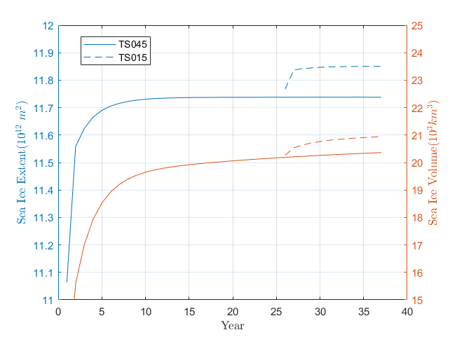
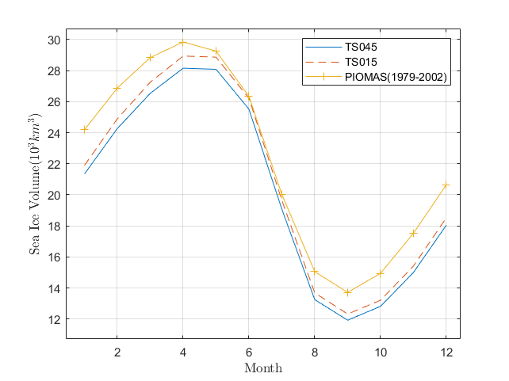

Arctic sea ice extent and volume (SIE and SIV).
# 定义
Sea ice concentration is the percentage of each pixel that is covered by ice.
海冰浓度是每个网格被冰覆盖的百分比。
Sea ice extent is calculated by adding up the pixels with an ice concentration of at least 15 percent.
海冰范围的计算方法是将冰浓度至少为 15% 的网格的海冰面积相加。
In each grid cell the sea ice volume is calculated as thickness multiplied with concentration and with area, with contributions from all grid cells to the total volume.
在每个网格中，海冰体积计算为厚度乘以浓度和面积，所有网格单元累加为总体积。
Satellites measure sea ice concentration on a 25 kilometer by 25 kilometer grid. This image illustrates the area covered by each pixel of the low-resolution microwave instruments superimposed on a higher-resolution, color satellite image. (NASA Earth Observatory image by Joshua Stevens and Robert Simmon, based on MODIS data.)
参考：NASA, sea ice，Polar Portal, Sea Ice Thickness and Volume
# 模式数据计算
在 sea ice model: Community Ice Code (CICE) 的月数据输出中，与 SIE/SIV 有关的有
- hi(m): grid cell mean ice thickness (tarea) # ice volume per unit grid cell area
- aice(%): ice area (aggregate) (tarea)
- hisnap(m): ice volume snapshot (tarea)
- aisnap(): ice area snapshot (tarea)
还有一些 aicen00x (ice volume, category 1~5)；vicen00x (ice area, category 1~5)，不知道类别对应的物理量是什么，估计与后面的分析有关。
取北纬 30° 以上的数据，aice 对应海冰浓度，筛去小于 15% 的数据后乘以 T 网格面积累加计算海冰范围；
hi 为网格平均冰厚，乘以 T 网格面积累加计算海冰体积。
对每年的 12 月数据取平均计算当年的 SIE/SIV，绘制模型 37 年的输出结果。
对每月的 33 至 37 共 5 模型年的数据取平均，计算 SIE/SIV 的气候季节循环，且体积与 PIOMAS（1979-2002）实际数据进行比较。


对应代码：
parfor i = 1:n
FileName=fileName{i};
start=[1,1,1];count=[Inf,Inf,1];stride=[1,1,1];
iceAreaAve=ncread(FileName,'aice',start,count,stride)*0.01;
iceVolumeAve=ncread(FileName,'hi',start,count,stride);
iceAreaAve(iceAreaAve<0.15)=NaN;
iceArea(i)=nansum(nansum(iceAreaAve.*tarea));
iceVolume(i)=nansum(nansum(iceVolumeAve.*tarea));
end
# 空间分布
模式 TS045、TS015 的 9 月和 3 月的海冰厚度场，红线为海冰范围（15% 海冰浓度等值线）。